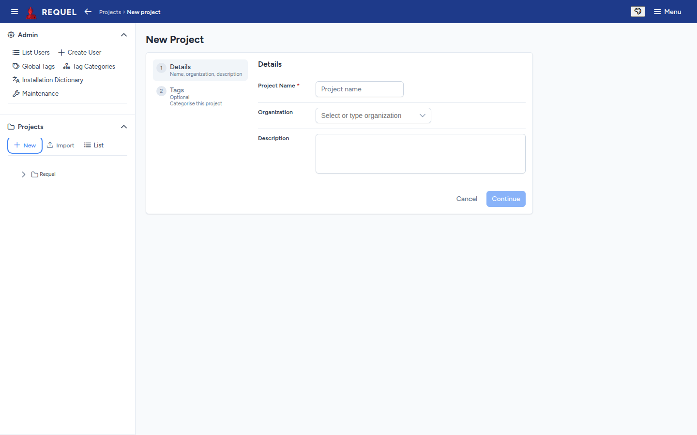
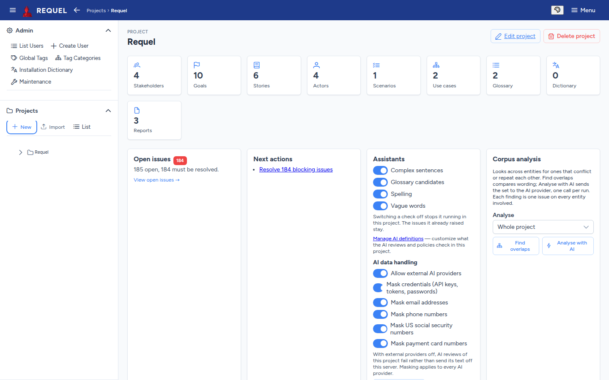
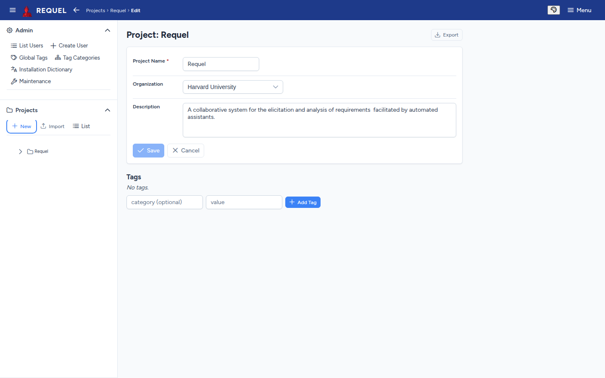

Projects
A project holds one system's requirements, its stakeholders and their discussion.
The project list
Projects → List in the sidebar shows every project you can open, with its organization, status, creator and how many stakeholders, goals, stories and use cases it has. Search narrows it; the column headings sort it; the row menu has the project’s actions.

Create a project
Choose New (sidebar) or New Project (list). Give it a name,
and optionally an organization and description, then Continue to add tags or
finish. You need the createProjects permission
(users).

You become the project’s first stakeholder, with every permission. The project starts with two report templates, an HTML specification and a Markdown ticket (Reports).
The project overview
Click a project’s name to open its overview.

- Tiles count each kind of item; click one to open its list.
- Open issues counts unresolved issues and how many must be resolved, and links to the open issues page.
- Next actions suggests what to do: resolve blocking issues, add a first goal, add a stakeholder.
- Assistants turns each automated check on or off for this project and re-runs the analysis (Issues and discussion), and holds the AI switches and data handling (AI review).
- Corpus analysis looks for requirements that overlap or conflict (AI review).
Edit a project
Edit project on the overview changes the name, organization, description and tags. Its Export button is how you save a copy.

Import and export
Export (on the project’s edit page) downloads the whole project as XML: requirements, stakeholders and their permissions, glossary, dictionary, tags, reports and every note and issue. The file follows the published project schema.
Import (sidebar or list) reads such a file into a new project:
- The project takes the name in the file. If that name is taken, Requel adds “(1)”, “(2)” and so on; rename it afterwards on its edit page.
- Users the file names (stakeholders, authors) are created if no user has that username, with the login details they had on the server the file came from. Users who already exist are used as they are.
- You are added as a stakeholder with every permission.
Export and import are also how you copy a project to another Requel server, and how you move projects from Requel 1.0 or 1.1 (Upgrading).
Delete a project
Delete project on the overview removes the project and everything in it. The dialog offers Download backup (the XML export) first; then Delete permanently. It can’t be undone, other than by importing the backup.